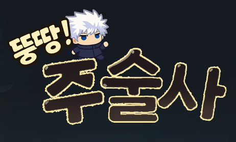
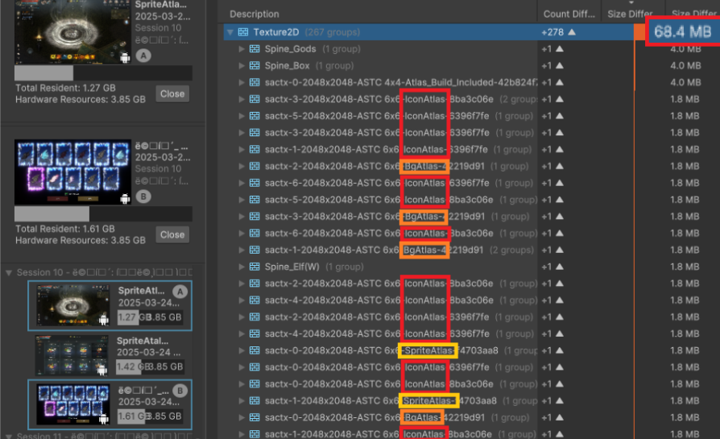
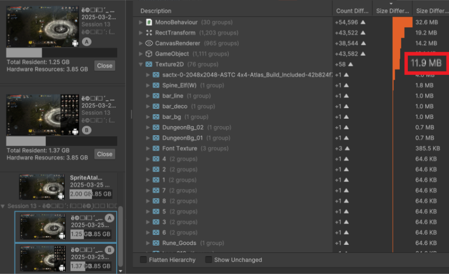
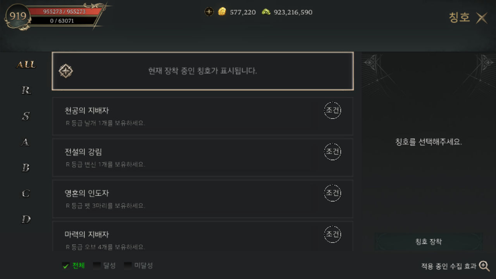
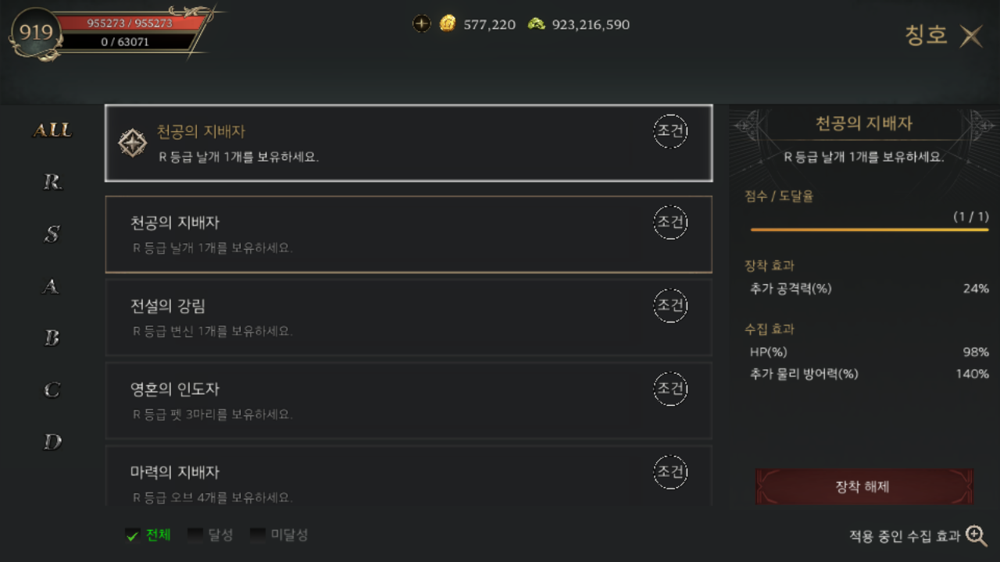
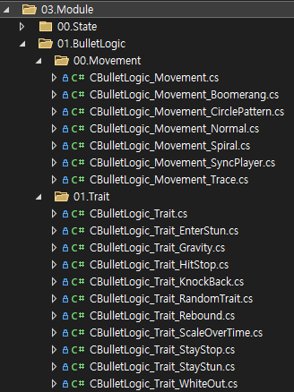
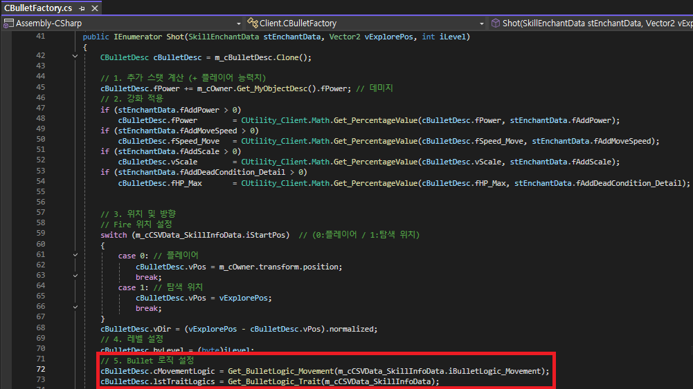

포트폴리오 (Portfolio)
뚱땅주술사
2025. 01. ~ Ing.
개발 도구
C# / Unity / Backend Server / GitHub
기술 상세
- 모듈화 스킬 시스템 : 전략 패턴, 옵저버 패턴 등을 활용한 확장 가능한 아키텍처 설계
- Addressable & PAD : 에셋 중복 참조 해결 및 스토어 인프라를 통한 리소스 로드 최적화
- Backend Server : 뒤끝(Backend) DB를 활용한 비동기 데이터 동기화 및 로그인 구현

SpriteAtlas 최적화 (Late Binding)
메모리 사용량 68.4MB → 11.9MB (약 82% 절감)


나비 (Vertex Shader & Instancing)


* 거리 비례 가중치를 적용한 Vertex Shader 수식 시각화
해결 전략: y = sin(|x| + t) * |x| 수식을 응용하여 CPU 연산 없이 유기적인 펄럭임 구현 및 GPU Instancing으로 Draw Call 최소화.
나뭇잎 (Centralized Control)
해결 전략: 단 하나의 Particle System으로 중앙 제어, Physics.OverlapSphere로 주변 나무만 탐색하여 수동 방출(Emit).
| 항목 | 개별 부착 | 중앙 제어 | 개선 효과 |
|---|---|---|---|
| Draw Calls | 100회 | 1회 | 99% 감소 |
빌드 자동화 툴 (Editor Window)
- SVN 연동: 빌드 전 리비전 업데이트 및 버전 넘버링 자동화.
- 휴먼 에러 방지: 서버 환경(Live/QA), 키스토어 설정 프리셋 관리.
코스튬 시스템
강화 시스템 (Enhancement): 서버와 데이터 동기화 로직을 구축하여, 강화 성공 시 능력치 갱신 및 MAX 레벨 달성 시 전용 이펙트(Gold Material) 자동 적용.
칭호 시스템


데이터 동기화: 몬스터 처치, 레벨업 등 이벤트 발생 시 옵저버 패턴으로 조건을 체크하고 DB 비동기 업데이트 구현.
모듈화 스킬 시스템
개발 목표
• 스킬 구현 시 중복되는 능력의 공유 방법 필요
• 데이터(csv)로 다수의 스킬 제작
개발 사항
① 전략 패턴 도입
- 투사체의 동작을 이동(Movement)과 특성(Trait) 인터페이스로 분리하여 캡슐화
- "유도", "스턴", "폭발" 등 공통 기능을 중복 구현 없이 재사용 가능하도록 구조화
② 데이터 바인딩
- SkillInfo.csv의 컬럼 값을 읽어 팩토리 클래스가 런타임에 로직을 조립
- SO 조합으로 프로그래머 개입 없이 기획자가 수백 가지의 파생 스킬 생성 가능
해결 방법
① 전략 패턴 도입

* 전략 패턴으로 분리된 로직 구조

* CBulletFactroy에서 불렛 생성 시 전략 패턴 로직 대입
- 투사체의 동작을 이동(Movement)과 특성(Trait) 인터페이스로 분리하여 캡슐화
- "유도", "스턴", "폭발" 등 공통 기능을 중복 구현 없이 재사용 가능하도록 구조화
이동 로직(Movement) 전체 소스코드 보기 (C#)
1. 이동 로직의 기본 설계 (Base Class)
모든 투사체 이동 로직이 상속받는 추상 클래스입니다. 초기화(Initialize)와 매 프레임 갱신(ProcessMove)을 정의합니다.
public abstract class CBulletLogic_Movement : ScriptableObject
{
protected CBullet m_cBullet;
protected Rigidbody2D m_rd;
protected CBulletDesc m_cBulletDesc;
// CBullet 이동로직 초기화
// CBullet.Init에서 호출
public virtual bool Initialize(CBullet cBullet)
{
m_cBullet = cBullet;
if (m_cBullet == null)
{
m_rd = m_cBullet.Rigidbody;
m_cBulletDesc = m_cBullet.m_cBulletDesc;
}
else
{
Debug.LogError($"{cBullet.name} is null.");
return false;
}
return true;
}
CBullet 이동로직
CBullet.FixedUpdate에서 호출
public virtual bool ProcessMove()
{
if (m_rd == null || m_cBulletDesc == null)
return false;
return true;
}
}2. 일반 이동 (Normal)
가장 기초적인 직선 이동 로직입니다. 설정된 방향(vDir)으로 속도를 적용합니다.
[CreateAssetMenu(menuName = "BulletLogic/Movement/Normal")]
public class CBulletLogic_Movement_Normal : CBulletLogic_Movement
{
public override bool ProcessMove()
{
if (base.ProcessMove() == false)
return false;
// 방사형으로 발사
m_rd.velocity = m_cBulletDesc.vDir * m_cBulletDesc.fSpeed_Move;
return true;
}
}3. 부메랑 이동 (Boomerang)
상태 머신(FSM)을 활용하여 [출발 -> 체류 -> 복귀]의 3단계 동작을 구현했습니다.
[CreateAssetMenu(menuName = "BulletLogic/Movement/Boomerang")]
public class CBulletLogic_Movement_Boomerang : CBulletLogic_Movement
{
public float m_fBoomerangTime_Out = 0.5f;
public float m_fBoomerangTime_Stay = 0.75f;
private Transform m_trPlayer;
private float m_fTimer = 0f;
private byte m_byBoomerangState = 0; // 0:출발, 1:체류, 2:복귀
public override bool Initialize(CBullet cBullet)
{
if (base.Initialize(cBullet) == false) return false;
m_byBoomerangState = 0;
return true;
}
public override bool ProcessMove()
{
if (base.ProcessMove() == false) return false;
m_cBullet.transform.Rotate(Vector3.forward * -150 * Time.deltaTime);
switch (m_byBoomerangState)
{
case 0: Update_Out(); break;
case 1: Update_Stay(); break;
case 2: Update_Return(); break;
}
return true;
}
private void Update_Out()
{
m_cBullet.Rigidbody.velocity = m_cBullet.m_cBulletDesc.vDir * m_cBullet.m_cBulletDesc.fSpeed_Move;
m_fTimer += Time.deltaTime;
if (m_fTimer >= m_fBoomerangTime_Out)
{
m_byBoomerangState = 1;
m_fTimer = 0f;
m_cBullet.Rigidbody.velocity = Vector2.zero;
}
}
private void Update_Stay()
{
m_fTimer += Time.deltaTime;
if (m_fTimer >= m_fBoomerangTime_Stay)
{
m_byBoomerangState = 2;
m_fTimer = 0f;
}
}
private void Update_Return()
{
if (m_trPlayer == null) m_trPlayer = CGameManager.instance.PLAYER.transform;
Vector2 vDir = (Vector2)m_trPlayer.position - m_cBullet.Rigidbody.position;
m_cBullet.Rigidbody.velocity = vDir.normalized * m_cBullet.m_cBulletDesc.fSpeed_Move;
if (vDir.magnitude <= 0.1f) m_cBullet.Hide();
}
}4. 원형 패턴 (CirclePattern)
플레이어 주변을 공전하는 투사체입니다. 삼각함수를 이용해 각도를 좌표로 변환합니다.
[CreateAssetMenu(menuName = "BulletLogic/Movement/CirclePattern")]
public class CBulletLogic_Movement_CirclePattern : CBulletLogic_Movement
{
private float m_fRadius = 2.0f;
private float m_fRotateSpeed = 150f;
public override bool ProcessMove()
{
if (base.ProcessMove() == false) return false;
float fAngleStep = 360f / m_cBulletDesc.byTotalCount;
float fCurrentAngle = (m_fRotateSpeed * Time.time) + (fAngleStep * m_cBulletDesc.byBulletIndex);
// 극좌표계를 직교좌표계로 변환 (r*cos, r*sin)
float fRadius = fCurrentAngle * Mathf.Deg2Rad;
Vector3 offset = new Vector3(Mathf.Cos(fRadius), Mathf.Sin(fRadius), 0) * m_fRadius;
m_rd.MovePosition(CGameManager.instance.PLAYER.transform.position + offset);
return true;
}
}5. 나선형 이동 (Spiral)
시간이 지날수록 반지름이 커지는 나선 궤도를 그립니다.
[CreateAssetMenu(menuName = "BulletLogic/Movement/Spiral")]
public class CBulletLogic_Movement_Spiral : CBulletLogic_Movement
{
public float fRotateSpeed = 2f;
public float fExpandSpeed = 2f;
public override bool ProcessMove()
{
if (base.ProcessMove() == false) return false;
float fTimer = 5f - m_cBullet.fLIFETIME;
float fAngle = fRotateSpeed * fTimer;
float fRadius = fExpandSpeed * fTimer;
float x = Mathf.Cos(fAngle) * fRadius;
float y = Mathf.Sin(fAngle) * fRadius;
m_rd.velocity = Vector2.zero;
m_rd.MovePosition(m_cBulletDesc.vPos + new Vector2(x, y));
return true;
}
}6. 플레이어 동기화 (SyncPlayer)
플레이어의 위치와 완벽하게 일치하여 이동합니다 (오라형 스킬 등).
[CreateAssetMenu(menuName = "BulletLogic/Movement/SyncPlayer")]
public class CBulletLogic_Movement_SyncPlayer : CBulletLogic_Movement
{
public override bool ProcessMove()
{
if (base.ProcessMove() == false) return false;
m_cBullet.transform.position = CGameManager.instance.PLAYER.transform.position;
return true;
}
}7. 유도탄 (Trace)
타겟 방향으로 계속해서 속도를 갱신하여 추적합니다.
[CreateAssetMenu(menuName = "BulletLogic/Movement/Trace")]
public class CBulletLogic_Movement_Trace : CBulletLogic_Movement
{
public override bool ProcessMove()
{
if (base.ProcessMove() == false) return false;
m_rd.velocity = m_cBulletDesc.vDir * m_cBulletDesc.fSpeed_Move;
return true;
}
}특성 로직(Trait) 전체 소스코드 보기 (C#)
1. 특성 로직의 기본 설계 (Base Class)
충돌 이벤트(Enter, Stay, Exit)와 매 프레임(Tick) 실행될 로직을 정의합니다.
public abstract class CBulletLogic_Trait : ScriptableObject
{
protected CBullet m_cBullet;
protected CBulletDesc m_cBulletDesc;
public virtual bool Initialize(CBullet cBullet)
{
m_cBullet = cBullet;
if (m_cBullet == null)
{
Debug.LogError($"{cBullet.name} is null.");
return false;
}
m_cBulletDesc = m_cBullet.m_cBulletDesc;
return true;
}
public virtual bool Tick() { return true; }
public virtual bool CollisionEnter(CActor cTargetActor, int iColliderTagHash) { return true; }
public virtual bool CollisionStay(CActor cTargetActor, int iColliderTagHash) { return true; }
public virtual bool CollisionExit(CActor cTargetActor, int iColliderTagHash) { return true; }
}2. 스턴 부여 (EnterStun)
충돌 시 데미지를 주고, 적을 일정 시간 동안 스턴 상태(FSM)로 만듭니다.
[CreateAssetMenu(menuName = "BulletLogic/Trait/EnterStun")]
public class CBulletLogic_Trait_EnterStun : CBulletLogic_Trait
{
public override bool CollisionEnter(CActor cTargetActor, int iColliderTagHash)
{
if (base.CollisionEnter(cTargetActor, iColliderTagHash) == false) return false;
// 데미지 처리 및 DPS 기록
(cTargetActor as CMonster).Damage(m_cBulletDesc.fPower);
CGameManager.EVENT_MANAGER.BroadCast_Param(EventType.ET_MONSTERDAMAGE, (m_cBulletDesc.iID, m_cBulletDesc.fPower));
// 스턴 적용
CCoroutine_Excution.instance.RunCoroutine(IEStun(cTargetActor));
return true;
}
private IEnumerator IEStun(CActor cTargetActor)
{
CMonster cMonster = cTargetActor as CMonster;
cMonster.Change_State(FSM.STUN);
yield return YieldCache.WaitForSeconds(1f);
cMonster.Change_State(FSM.MOVE);
}
}3. 인력&척력 (Gravity)
범위 내(CollisionStay)에 있는 적을 투사체 쪽으로 끌어당기거나 밀어냅니다.
SO내에서 bool을 통해 인력과 척력으로 조작 가능
[CreateAssetMenu(menuName = "BulletLogic/Trait/Gravity")]
public class CBulletLogic_Trait_Gravity : CBulletLogic_Trait
{
public bool m_bDirection; // true: 밀어냄, false: 당김
public float m_fPower = 3f;
public override bool CollisionStay(CActor cTargetActor, int iColliderTagHash)
{
if (base.CollisionStay(cTargetActor, iColliderTagHash) == false) return false;
// 지속 데미지 적용
float fDmg = m_cBulletDesc.fPower * Time.deltaTime;
(cTargetActor as CMonster).Damage(fDmg);
CGameManager.EVENT_MANAGER.BroadCast_Param(EventType.ET_MONSTERDAMAGE, (m_cBulletDesc.iID, fDmg));
// 중력 효과 적용
Vector3 vDirection = m_cBullet.transform.position - cTargetActor.transform.position;
cTargetActor.transform.position += (vDirection.normalized * Time.deltaTime * m_fPower * (m_bDirection ? 1 : -1));
return true;
}
}4. 히트 스탑 (HitStop)
타격감을 극대화하기 위해 충돌 순간 투사체를 잠시 멈추고 몬스터를 흔듭니다.
[CreateAssetMenu(menuName = "BulletLogic/Trait/HitStop")]
public class CBulletLogic_Trait_HitStop : CBulletLogic_Trait
{
public override bool CollisionEnter(CActor cTargetActor, int iColliderTagHash)
{
if (base.CollisionEnter(cTargetActor, iColliderTagHash) == false) return false;
(cTargetActor as CMonster).Damage(m_cBulletDesc.fPower);
CGameManager.EVENT_MANAGER.BroadCast_Param(EventType.ET_MONSTERDAMAGE, (m_cBulletDesc.iID, m_cBulletDesc.fPower));
CCoroutine_Excution.instance.RunCoroutine(IEHitStop(cTargetActor));
return true;
}
private IEnumerator IEHitStop(CActor cTargetActor)
{
CMonster cMonster = cTargetActor as CMonster;
cMonster.Shake(0.1f, 0.1f); // 몬스터 흔들림 효과
float fOriginSpeed = m_cBulletDesc.fSpeed_Move;
if (fOriginSpeed <= 0.01f) yield break;
// 투사체 정지 후 재개
m_cBulletDesc.fSpeed_Move = 0f;
yield return YieldCache.WaitForSeconds(0.1f);
m_cBulletDesc.fSpeed_Move = fOriginSpeed;
}
}5. 넉백 (KnockBack)
투사체의 진행 방향으로 적을 밀어냅니다.
[CreateAssetMenu(menuName = "BulletLogic/Trait/KnockBack")]
public class CBulletLogic_Trait_KnockBack : CBulletLogic_Trait
{
public bool m_bDirection;
public float m_fKnockbackPower = 50f;
public override bool CollisionEnter(CActor cTargetActor, int iColliderTagHash)
{
if (base.CollisionEnter(cTargetActor, iColliderTagHash) == false) return false;
(cTargetActor as CMonster).Damage(m_cBulletDesc.fPower);
CGameManager.EVENT_MANAGER.BroadCast_Param(EventType.ET_MONSTERDAMAGE, (m_cBulletDesc.iID, m_cBulletDesc.fPower));
// 넉백 적용
Vector2 vKnockbackDir = m_cBulletDesc.vDir.normalized * (m_bDirection ? 1 : -1);
(cTargetActor as CMonster).Knockback(vKnockbackDir, m_fKnockbackPower);
return true;
}
}6. 무작위 특성 부여 (RandomTrait)
여러 특성 중 하나를 랜덤하게 선택하여 적용합니다 (전략 패턴의 중첩 활용).
[CreateAssetMenu(menuName = "BulletLogic/Trait/RandomBullet")]
public class CBulletLogic_Trait_RandomTrait : CBulletLogic_Trait
{
public override bool Initialize(CBullet cBullet)
{
if (base.Initialize(cBullet) == false) return false;
// 보유한 특성 리스트 중 하나를 랜덤 선택
List<CBulletLogic_Trait> lstTraitLogic = m_cBulletDesc.lstTraitLogics;
System.Random random = new System.Random();
int iIndex = random.Next(1, lstTraitLogic.Count);
CBulletLogic_Trait cTrait = lstTraitLogic[iIndex];
lstTraitLogic.Clear();
lstTraitLogic.Add(cTrait);
return true;
}
}7. 벽 튕기기 (Rebound)
화면 경계에 닿으면 입사각/반사각을 계산하여 방향을 전환합니다.
[CreateAssetMenu(menuName = "BulletLogic/Trait/Rebound")]
public class CBulletLogic_Trait_Rebound : CBulletLogic_Trait
{
private Rigidbody2D m_rd;
public override bool Initialize(CBullet cBullet)
{
if (base.Initialize(cBullet)) return false;
m_rd = m_cBullet.Rigidbody;
return true;
}
public override bool Tick()
{
// 매 프레임 화면 경계 충돌 체크
Redirect();
return true;
}
private void Redirect()
{
Vector2 vCollision_Normal = Get_CollisionNormal();
if (vCollision_Normal == Vector2.zero) return;
// 반사각 계산 (Vector2.Reflect) 및 속도 재설정
m_cBulletDesc.vDir = Vector2.Reflect(m_cBulletDesc.vDir, vCollision_Normal);
m_rd.velocity = m_cBulletDesc.vDir * m_cBulletDesc.fSpeed_Move;
// 내구도 감소
if (--m_cBulletDesc.fHP <= 0) m_cBullet.Hide();
}
private Vector2 Get_CollisionNormal()
{
// 화면 경계(ScreenBoundary)를 기준으로 법선 벡터 반환
Vector4 vBound = CGameManager.instance.PLAYER.SCREENBOUNDERY_WORLDPOSITION;
Vector3 vPos = m_cBullet.transform.position;
if (vPos.x <= vBound.x) return new Vector2(-1, 0); // 좌
if (vPos.y <= vBound.y) return new Vector2(0, -1); // 하
if (vPos.x >= vBound.z) return new Vector2(1, 0); // 우
if (vPos.y >= vBound.w) return new Vector2(0, 1); // 상
return Vector2.zero;
}
}8. 크기 변화 (ScaleOverTime)
시간 경과에 따라 투사체의 크기를 부드럽게(Lerp) 변화시킵니다.
[CreateAssetMenu(menuName = "BulletLogic/Trait/ScaleOverTime")]
public class CBulletLogic_Trait_ScaleOverTime : CBulletLogic_Trait
{
public float m_fTargetScale = 5f;
public float m_fLerpTime = 5f;
public override bool Tick()
{
if (base.Tick() == false) return false;
// 현재 수명 비율에 맞춰 Scale 보간 (Lerp)
float fRatio = Mathf.Clamp01((5 - m_cBullet.fLIFETIME) / m_fLerpTime);
Vector3 vStartScale = new Vector3(0.1f, 0.1f, 0.1f) * m_cBulletDesc.vScale;
Vector3 vTargetScale = vStartScale * m_fTargetScale;
m_cBullet.transform.localScale = Vector3.Lerp(vStartScale, vTargetScale, fRatio);
return true;
}
}9. 영역 속박 (StayStun)
범위 안에 들어온 적을 속박(Stun)하고, 범위를 벗어나면(Exit) 해제합니다.
[CreateAssetMenu(menuName = "BulletLogic/Trait/StayStun")]
public class CBulletLogic_Trait_StayStun : CBulletLogic_Trait
{
public override bool CollisionEnter(CActor cTargetActor, int iColliderTagHash)
{
if (base.CollisionEnter(cTargetActor, iColliderTagHash) == false) return false;
// 속박 상태 적용
(cTargetActor as CMonster).Change_State(FSM.STUN);
return true;
}
public override bool CollisionExit(CActor cTargetActor, int iColliderTagHash)
{
if (base.CollisionEnter(cTargetActor, iColliderTagHash) == false) return false;
// 속박 해제
(cTargetActor as CMonster).Change_State(FSM.MOVE);
return true;
}
}10. 시각 효과 (WhiteOut)
충돌 시 몬스터가 하얗게 빛나는 피드백을 줍니다.
[CreateAssetMenu(menuName = "BulletLogic/Trait/WhiteOut")]
public class CBulletLogic_Trait_WhiteOut : CBulletLogic_Trait
{
public override bool CollisionEnter(CActor cTargetActor, int iColliderTagHash)
{
if (base.CollisionEnter(cTargetActor, iColliderTagHash) == false) return false;
// 하얗게 빛나기 켜기
(cTargetActor as CMonster).WhiteOut(true);
return true;
}
public override bool CollisionExit(CActor cTargetActor, int iColliderTagHash)
{
if (base.CollisionEnter(cTargetActor, iColliderTagHash) == false) return false;
// 끄기
(cTargetActor as CMonster).WhiteOut(false);
return true;
}
}② 데이터 바인딩
- SkillInfo.csv의 컬럼 값을 읽어 팩토리 클래스가 런타임에 로직을 조립
- 프로그래머 개입 없이 기획자가 수백 가지의 파생 스킬 생성 가능

드래곤볼 Z : 카카로트 (Team Project)
2022. 11. ~ 2023. 01.
개발 환경
C++ / DirectX 11 / HLSL / IMGUI / JSON / GitHub
담당 파트
툴 제작 / 카메라 연출 / 이펙트
기술 상세
- 카메라 시스템 : Singleton 패턴을 활용하여 플레이어 상태에 반응하는 역동적인 카메라 연출 시스템 설계
- 시네마틱 툴 : 인게임 컷신을 위한 키프레임 기반의 선형 보간을 적용하여 부드러운 컷신과 2축 쉐이킹 연출 구현
- 파티클 최적화 : Rect Buffer Instancing 및 오브젝트 풀링을 도입하여 대량의 파티클 렌더링 성능 극대화
- 렌더링 : Distortion, Dissolve, Bloom 등 hlsl 작성 및 IMGUI 기반 툴을 사용하여 이펙트 제작
원피스 바운티 러쉬 (Personal Project)
2022. 08. ~ 2022. 10.
개발 도구
C++ / DirectX 11 / HLSL / IMGUI / JSON / GitHub
기술 상세
- 애니메이션 시스템 : 뼈 기반의 선형 보간(Lerp)을 적용해 부드러운 모션 블렌딩을 구현하고, 루트 모션(Root Motion)으로 이동의 사실감 증대
- 절두체 컬링(Frustum Culling) 알고리즘을 구현하여 시야 밖 객체 렌더링을 제외, 드로우 콜(Draw Call) 비용 절감
- 섀도우 매핑(Shadow Mapping)을 통한 실시간 그림자 처리
- FSM(유한 상태 머신) 패턴을 도입하여 몬스터의 다양한 패턴(공격, 피격, 스킬 등)을 모듈식으로 제어 및 확장성 확보
- 네비게이션 메시(NavMesh)를 구축하고 평면 방정식을 활용해 캐릭터의 정확한 Y축 높이 판정 및 이동 제한 구현


골드 윙 (Team Project)
2022. 06. ~ 2022. 07.
개발 도구
C++ / DirectX 9 / GitHub
담당 파트
최적화, 플레이어 스킬, 시네마틱 연출
기술 상세
- Core 매니저를 통해 전역 시간(Time Scale)을 제어하고, 객체별 Delta Time을 개별 연산하여 'Time Slow' 연출 구현
- Raycasting과 내적 연산을 활용해 시야각 내 최단 거리의 적을 탐색하는 와이어 타겟팅 로직 설계
메탈슬러그 (Personal Project)
2022. 04. ~ 2022. 04.
개발 도구
C++ / Windows API
기술 상세
- 추상 팩토리 패턴을 도입하여 객체(플레이어, 투사체, 이펙트) 생성 로직을 캡슐화하고 코드의 재사용성 증대
- 자유 낙하 공식을 적용하여 캐릭터의 점프 및 투사체의 곡사 포물선 운동 등 현실적인 중력 가속도 로직 구현
- 두 점을 지나는 직선의 방정식을 활용하여 경사로 및 복잡한 지형에서의 정밀한 라인 충돌 처리